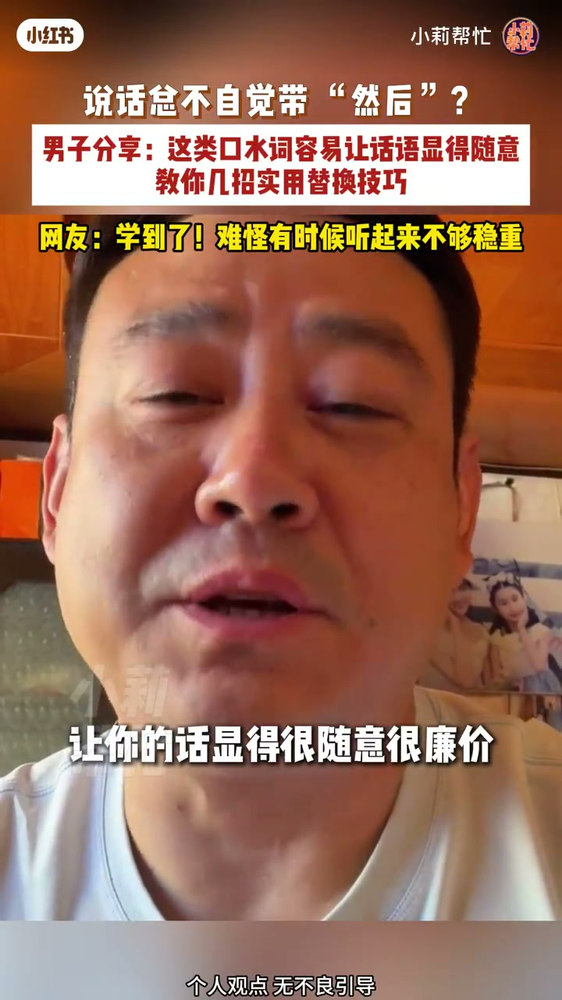
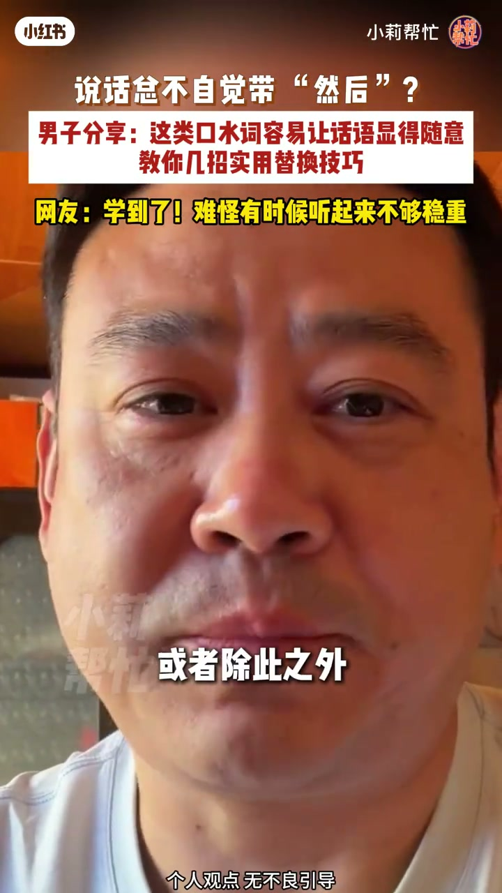
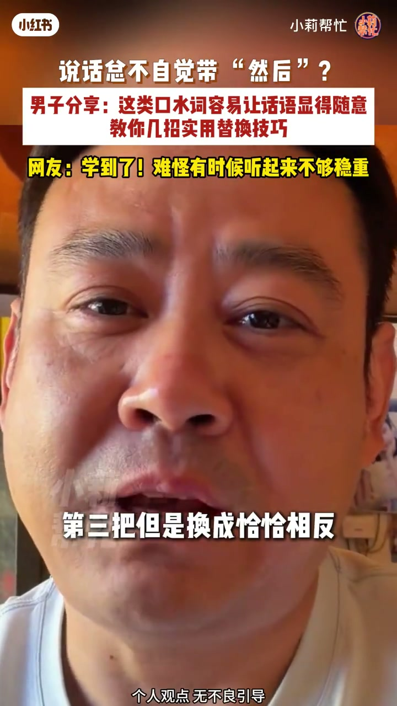
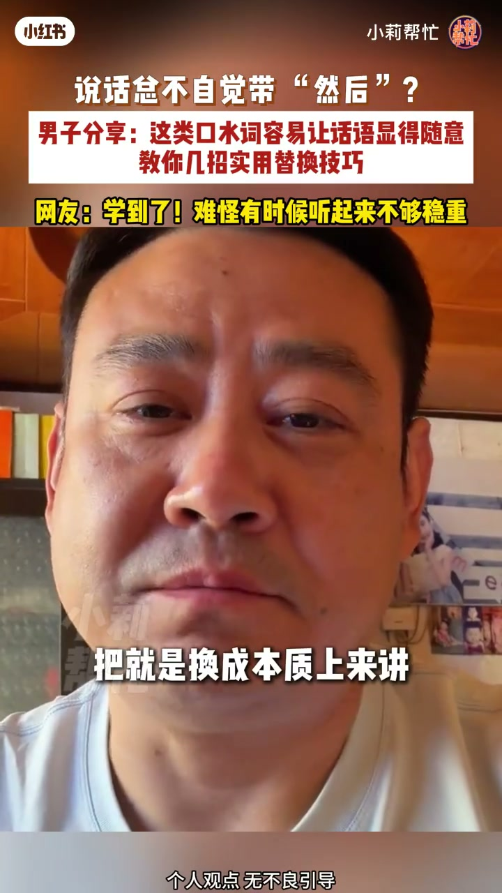

内容要点
知识结构
[00:00→00:20]
问题显形
讲话动不动就「然后」，节奏碎、显得随意。
[00:20→00:40]
为什么不稳重
口水词过多会稀释重点，听感不够沉稳。
[00:40→00:58]
替换思路
用更具体的衔接（因此/接着/另外）或短暂停顿替代。
总结
少说机械「然后」，多用有语义的衔接或停顿，表达更稳。
口播转录极短；技巧细节主要依笔记文案归纳。
图文实录
口水词出场
00:00 – 00:20
开场点出讲话「动不动就」带出口水词的习惯，对应「然后」问题。

[00:07]开场：讲话总不自觉带「然后」
Opening: habitually padding speech with “and then”
听感代价
00:20 – 00:40
文案强调这类词让话语显随意、不够稳重——问题不在偶发，而在高频机械复读。

[00:22]口水词过多：听感变随意
Too many filler words: speech sounds casual and shaky

[00:36]对比：稳重表达需要有效衔接
Contrast: steady speech needs meaningful transitions
替换与停顿
00:40 – 00:58
实用方向：把「然后」换成有逻辑的连接词，或用停顿换气代替口头禅。

[00:51]收束：用衔接词或停顿替换口水词
Close: replace fillers with real connectors or pauses